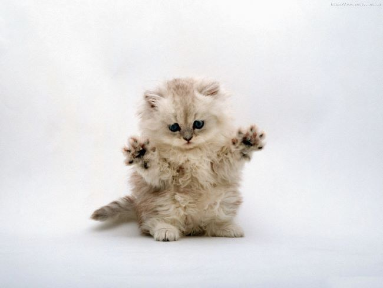

Красивый пушистый кот с сапфировыми глазами, густой шерстью и белыми лапками — это описание бирманца.
История его происхождения овеяна красивыми легендами. До сих пор неизвестно, какие животные были родоначальниками. На фото
видно, что по окрасу бирманец похож на сиама, но по характеру — его полная противоположность. Спокойные, любознательные
животные не стесняются выражать свою любовь к хозяевам и в то же время, как истинные аристократы, не будут навязывать своё
общество, если люди заняты и не могут уделить им внимания.
Это не всегда можно понять по фото, но мейн-куны — коты-великаны. При этом они считаются одной из лучших пород для домашнего
содержания. По-королевски красивая внешность в сочетании с дружелюбным характером — идеальный пример семейного питомца.
Чем старше они становятся, тем ярче в них проявляются царственные привычки. Они прекрасно чувствуют настроение домочадцев:
погружаются в задумчивое созерцание, когда хозяева нуждаются в покое и тишине, активно поддерживают игру, если того требует
ситуация.

Представителей этой породы можно узнать по внушительным размерам, пушистой шерсти и характерному воротнику вокруг шеи.
Последние два признака хорошо видны на фото. Во внешности сочетаются черты дикого лесного кота и домашнего животного: густая
шерсть, чтобы спасаться от холода, атлетическое сложение и сильные когти, чтобы охотиться, умный внимательный взгляд.
Они уравновешены и рассудительны, как настоящие северные жители.